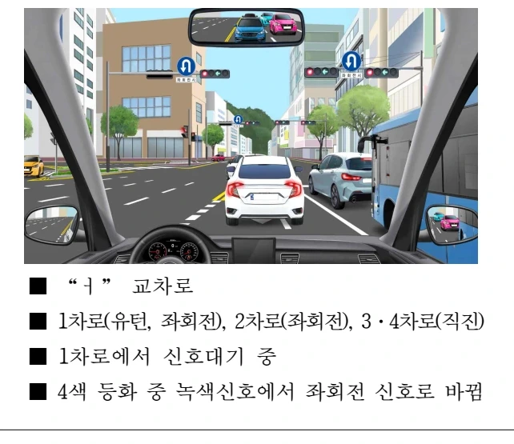

790. Hai cách nào có thể quay đầu xe an toàn nhất trong tình huống sau?

- ①Quay đầu xe lần lượt bắt đầu từ xe ở trước trong khu vực quay đầu xe có vạch nét đứt màu trắng cùng với tín hiệu đèn cho phép quay đầu xe.
- ②Không cần phải chú ý đến xe rẽ phải và đi nhập vào làn đường chính từ làn đường phụ bên trái.
- ③Có thể quay đầu xe bất cứ lúc nào bất kể đèn tín hiệu giao thông miễn là không cản trở các xe ở đường phía đối diện.
- ④Không cần chú ý đến xe quay đầu xe trước ở ngay sau xe mình.
- ⑤Có thể có xe ở đường đối diện vi phạm tín hiệu đèn và chạy thẳng, nên cần kiểm tra bằng mắt rồi mới quay đầu xe.
Xem đáp án
Đáp án
① Quay đầu xe lần lượt bắt đầu từ xe ở trước trong khu vực quay đầu xe có vạch nét đứt màu trắng cùng với tín hiệu đèn cho phép quay đầu xe.
⑤ Có thể có xe ở đường đối diện vi phạm tín hiệu đèn và chạy thẳng, nên cần kiểm tra bằng mắt rồi mới quay đầu xe.
Căn cứ
Đây là giao lộ mà bạn có thể quay đầu xe khi đèn rẽ trái thay đổi, đồng thời bạn phải chuẩn bị cho nguy hiểm do các phương tiện đi thẳng vào đường đối diện vi phạm tín hiệu ngay sau khi đèn báo rẽ trái và các phương tiện rẽ phải từ đường đối diện và vội vàng đi vào đường chính. Vì vậy, ngay cả khi tín hiệu thay đổi để cho phép quay đầu xe, bạn cần phải tận mắt kiểm tra xung quanh xung quanh, quay đầu xe lần lượt và chú ý đến các xe phía trước và phía sau ngay cả khi quay đầu xe khi có tín hiệu quay đầu xe.
Phần căn cứ là bản dịch máy để tham khảo.